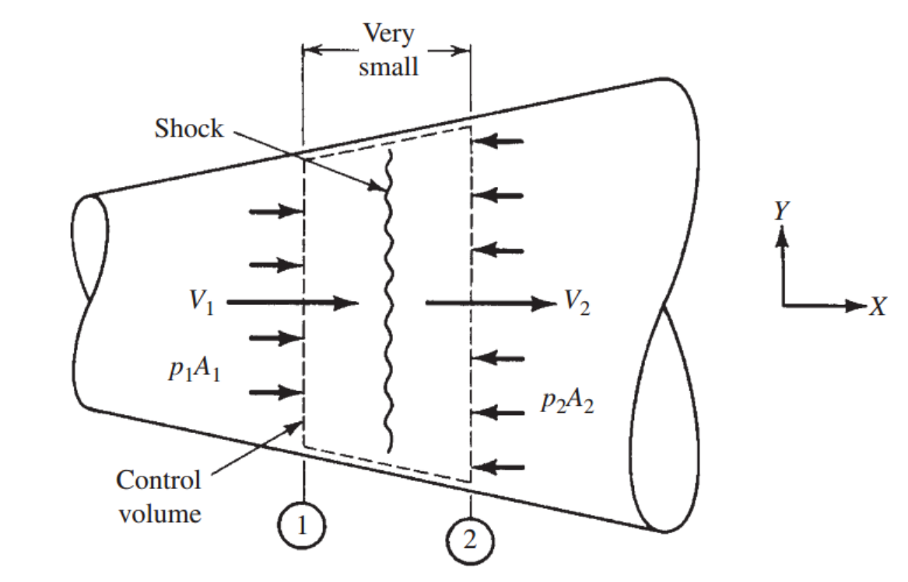
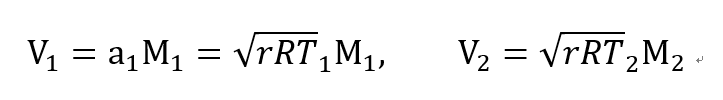
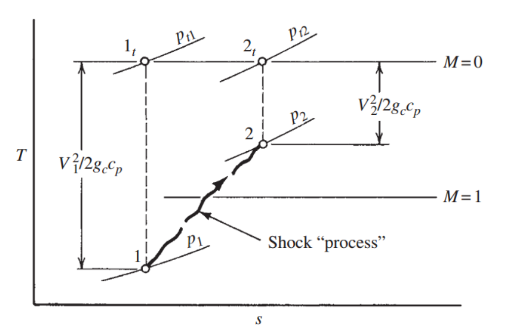
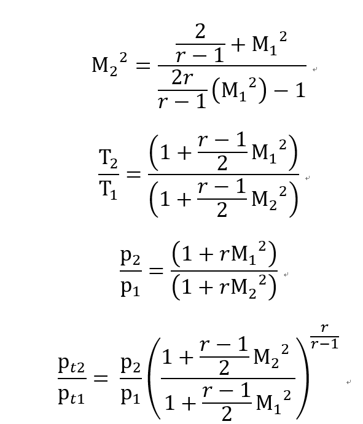

전 Ch5 마지막 포스터에서 언급한 Nozzle에서
Second critical Pressure을 설명하기 위해서
Standing Normal shock 등장

Normal shock은 쉽게 생각하면
" 유체의 급격한 Pressure 증가" 입니다.
[책에서는 "Finite pressure disturbance" 라고 언급]
변화가 일어나는 Control volume의 dx가 너무 작아(10^-6m)
사실 연속적이지만 Microscope 에서는 Discontinuouse 라고 해석합니다.
저는 이렇게 해석하고 부터 좀 이해가 가기 시작했습니다ㅎ
1->2 과정에서 pressure이 급격하게 증가하지 않으면
"Inlet, outlet boundary condition, Continuity equation, Energy equation 을 모두 만족시키지 못한다"
이제 Normal shock 앞뒤로 Property가 정확하게 어떻게 변화하는지 수식으로 해석해보자.
Assumptions
-Steady state
-Adiabatic
-No shaft work
-1-D analysis
-No friction from wall
-Neglect potential
1. Continuity Equation
dx 가 매우작으므로 dA =0 이라고 봐도 무방하다
따라서 면적은 동일하고 생각하
![[Gas Dynamics] Ch 6 Varying - Standing Normal shock - part 1](./images/img-002.png)
이제 우리가 아는 Ma 의 개념 도입하자

이제 V1,V2를 Ma와 온도에 관한 식으로 바꾸기 위해 연속 방정식에 대입하자
+ Ideal gas Equation of state p=
ρRT
(온도의 비율은 Energy equation 에서 알기 때문에 곧 설명)
![[Gas Dynamics] Ch 6 Varying - Standing Normal shock - part 1](./images/img-004.png)
2. Linear Momentum Equation
이제 (1) 식에서 압력비율의 바꾸기 위한 식을 찾아보자
+ V=M *a, Ideal gas equation of state p=
ρRT 사용
![[Gas Dynamics] Ch 6 Varying - Standing Normal shock - part 1](./images/img-005.png)
3. Energy Equation
Tt1 = Tt2임을 우리는 Adaibatic , no shaft work 조건을 통해서 알 수 있다.
따라서, Stagnation-Static Temperature relationship을 이용하면
Static 온도비율을 Ma1,Ma2함수로 표현 가능
![[Gas Dynamics] Ch 6 Varying - Standing Normal shock - part 1](./images/img-006.png)
자 이제 3 식을 연립해보자 (3), (2) 식을 (1)식에 대입하고 정리해주면
![[Gas Dynamics] Ch 6 Varying - Standing Normal shock - part 1](./images/img-007.png)
이제 우리는 Shock에 이전의 Ma1을 알면 이후 Ma2 를 위 식을 통해서 알 수 있다.
T-s 그래프로 분석

-그림에서 물결 표시로 1->2 가 되있는 이유는
"Equilibrium process in the thermodynamics sense가 아니기 때문"
-Always State 1: supersonic, State 2: subsonic
(State 1-> state 2 를 subsonic -> supersonic process 라고
계산하면 Entropy 변화량이 negative 모순)
-Pt 감소 (Entropy증가하므로)
결국 M1을 알면 우리는 M2, 온도,압력,Stagnation pressure ratio 전부 도출 할 수 있다..

따라서 M1 에 따른 모든 값들은 Normal Shock Table 에 표시되어 있다.
즉 위 식들을 암기할 필요 없다는 뜻
Table을 유심히 봐보면 M1 이 커질수록,
Shock 직전 supersonic flow 가 강할 수록,
Temperature, pressure, Stagnation pressure ratio 가 증가함을 알 수 있다.
Stagnation pressure-Entropy Equation 에서
Stagnation pressure ratio
는 자연로그의
엔트로피 변화량
과 비례하였다.
결론적으로 Energy disspation, loss가 더 심하단 말이다.
우리는 이렇게 shock의 변화가 클수록
Strong shock 이라고 한다.
이제 우리의 원초적인 질문
Nozzle에서 2nd Critical Pressure 이 무엇일까??
의 해답을 찾아보자
계속해서 말했다 싶이 Normal shock 은 Boundary condition 을 만족 시킴과
동시에 다른 continuity, momentum, energy equation을
모두
만족시키기 위해서
일어나는
급격한 압력 증가
라고 하였다
이제 이 관점으로 다시 한번 문제를 들여다 봐보자
아마 충분히 예상이 갔을 것이다. 분명히
![[Gas Dynamics] Ch 6 Varying - Standing Normal shock - part 1](./images/img-010.png)
1st critical , 3rd critical pressure point 사이에 있는 Receiver pressure 같은 경우
모두 Diverging nozzle 구간에서 계속해서 supersonic 으로 가속하게 되면
Boundary condition( P exit = P receiver)을 만족 시키지 못한다.
따라서 Diverging 구간 내부에서 Shock 이 발생하여
급격한 압력 증가가 일어나 Receiver pressure에 도달할 수 있게 된다.
이중 Exit 출구에서 Normal shock 이 발생하는 경우의 Receiver pressure을
2nd Critical pressure이라고 정의.
이 Normal shock 의 M1 이 가장 크므로 Strongest shock in the nozzle임을 알 수 있다.
Receiver Pressure에 따른 유동 최종 정리
Receiver pressure을 줄여가보면서 어떻게 유동이 바뀌는지 마지막으로 살펴보자
1. P1 > P rec > 1st Critical
Nozzle 안 전부 subsonic flow
Isentropic process
2. P rec = 1st Critical
Nozzle 안 전부 subsonic flow
except Throat 에서만 Sonic Flow( Ma =1 )
Isentropic process
3. 1st Critical > P rec > 2nd Critical
Converging Nozzle 에서 subsonic
Throat 에서 Sonic
Diverging Nozzle에서 supersonic으로 가다가
Normal shock 이 중간에 생김
이후 Subsonic flow
4. P rec = 2nd Critical
3번과정과 동일하지만 Normal shock 이 Exit에서 발생
5. 2nd Critical > P rec > 3rd Critical
Over expansion?
ch7,8에서 등장
6. P rec = 3rd Critical(Design condition)
Converging Nozzle 에서 subsonic
Throat 에서 Sonic
Diverging Nozzle에서 쭉 supersonic
No normal shock
Isentropic process
5. 3rd Critical > P rec > 0
Under expansion?
ch7,8에서 등장